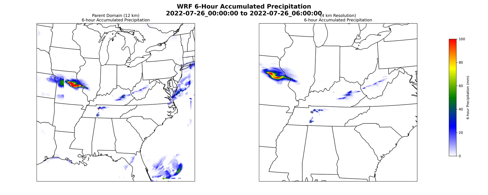
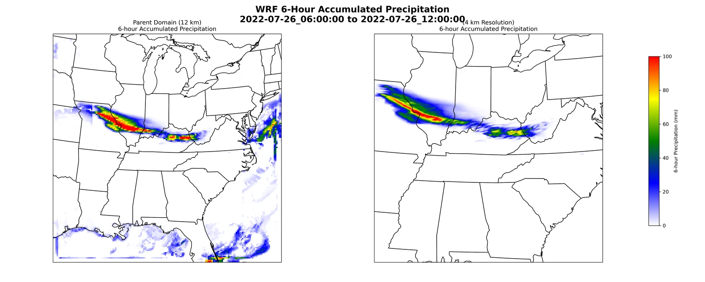
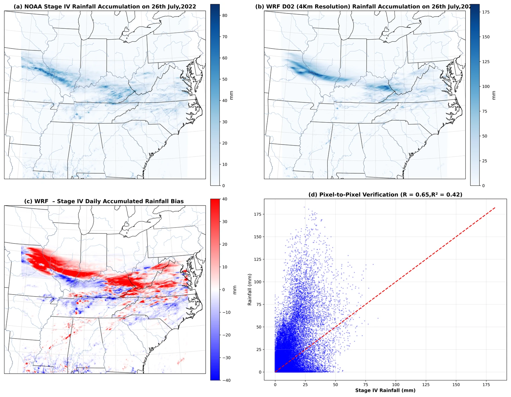

Inside an Appalachian extreme-rainfall event
Using nested WRF simulations and Stage IV precipitation to study the July 2022 Central Appalachian flood event.
- Model
- WRF / WPS
- Forcing
- ERA5
- Event
- 26–27 July 2022
- Verification
- Stage IV
The question
How well can a regional weather model represent an extreme-rainfall event?
This numerical weather prediction project examines the evolution and spatial organization of precipitation during the July 2022 Central Appalachian flood event.
Data & methods
A closer look at
the approach.
The workflow combines WRF preprocessing, ERA5 initial and boundary conditions, nested-domain simulation, precipitation accumulation, and comparison with Stage IV precipitation.
Findings & context
What the work shows.
- Six-hour accumulation maps track the movement and concentration of simulated precipitation.
- Verification against Stage IV examines the location and magnitude of modeled rainfall.
- The case study complements statistical climate analysis with a process-based view of an individual high-impact event.
Research and coursework simulation; not an operational forecast.
From the analysis
Research figures.
Select a figure to view it larger.
{kind=link}

{kind=link}

{kind=link}
{kind=link}
